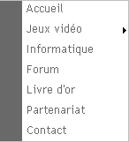
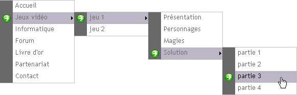

avoir un minimum de sens logique (pour les moments de réflexion intense :diable: ) ;
avoir déjà pratiqué le CSS : posséder un bon niveau avec ce langage peut fortement aider.
Pour commencer
Bien, après ces quelques précisions, passons à présent au fruit de notre (futur) travail. Voici donc ce que j'appelle un menu à déroulement horizontal :

Bon, ok : ça rend pas grand chose vu comme ça, peut-être ce second aperçu vous convaincra-t-il un peu plus :p :

Est-ce que ça rend déjà un peu mieux, vu comme ça ^^ ? Bon euh... pour en arriver là, il va falloir que vous suiviez rigoureusement ce tuto pour comprendre petit à petit la logique des choses que je vous expose :) .
Après cette courte partie sur l'aperçu du résultat, voici venue l'heure de mettre en place notre cahier des charges qui mettra en avant ce que l'on souhaite rendre possible et au contraire, ce que l'on veut empêcher.
Pas d'inquiétude, vous allez très vite le comprendre ^^ .
Voici, d'après le second aperçu ci-dessus et ce que l'on ne voit pas directement, notre liste :
Je veux...
créer mon menu sous forme de liste ;
disposer d'une bordure grise sur la gauche de mon menu ;
que les sous-menus s'affichent au survol du lien qui les contient ;
que mes sous-menus soient affichés juste à droite du lien les appelant (à la même hauteur et collés au menu de base) ;
ajouter un petit triangle noir en bout de ligne quand le menu peut être déroulé ;
ajouter une flèche dans la bordure de gauche au survol d'un lien pour montrer ma position ;
changer la couleur de mon texte ainsi que le fond au survol du lien ;
que le fond grisé par le survol d'un lien reste actif en descendant dans ses sous-menus ;
que mon menu soit ENTIÈREMENT compatible entre IE et FF.
Je ne veux pas...
que tous les sous-menus soient visibles sans survoler le lien qui les contient ;
que la taille de mon menu s'étende à l'apparition d'un sous-menu ;
que mes sous-sous-menus apparaissent lorsque le sous-menu les contenant apparaît (pour illustrer cette phrase, reprenez l'aperçu : je ne veux pas que le menu Présentation, Personnages, ... apparaisse au survol de Jeux Vidéo).
Bien, ça nous fait déjà pas mal de contraintes à respecter, je trouve :p .
Bien : à présent, nous allons nous poser la question qui permet de répondre à notre première contrainte, à savoir : faire notre menu sous forme de liste.
Des volontaires pour répondre :-° ?
Ok, c'est trop simple (vous verrez après :diable: ) : bien sûr, on utilise les balises <ul> et <li> pour créer notre liste.
Et pour créer les sous-menus et les éléments encore plus bas (comprenez par là sous-sous-menus etc), il suffit d'imbriquer une nouvelle liste <ul> dans la ligne <li> qui lui correspond.
Voici donc sans tarder TOUT le code HTML dont nous allons nous servir :
Comme vous pouvez le voir, notre menu sera donc contenu dans une div. Vous avez à présent TOUS les éléments qui ont permis de créer le menu, il nous reste à présent le plus gros du travail : le CSS (on peut en faire des choses avec, vous allez voir ça ^^ ).
Attaquons-nous dès maintenant à nos multiples contraintes énoncées il y a quelques temps.
Ok, mais il est où, ce fichier ? Faut l'inventer :o ?
Mais non malheureux :p , ce fichier, je vous le donne, bien évidemment. Il se trouve ici, faites-en un copier-coller sous le Bloc-notes (ou toute autre application similaire) et enregistrez-le sous [nom].htc (où [nom] est le nom que vous décidez de lui donner ^^ ). Pour ma part, celui que j'ai récupéré était nommé csshover.htc, j'ai donc gardé ce nom.
Je vous conseille de ne pas (trop) chercher à en comprendre le fonctionnement si vous voulez garder toute votre tête :p . Retenez simplement que sans ce fichier, IE (version inférieure à 7) ne permettrait pas les actions liées au survol (plus d'infos ici).
Et ce fichier, il se met où ?
Eh bien si j'ai abordé ce sujet avant d'entrer dans le CSS, c'est parce qu'il s'agit là du premier élément dont nous allons nous servir :) ; regardez :
body {
behavior: url("csshover.htc");
}
Voilà : ça, c'est fait :D . Bien évidemment, vous précisez l'emplacement exact de votre fichier .htc, il se peut qu'il ne se trouve pas au même endroit que le mien.
Cette fois, c'est la bonne
Bien : nous allons désormais nous attaquer réellement à notre menu pour le rendre plus beau (parce que plus moche, c'est pas possible :lol: ).
Ceci ne correspond qu'à une légère mise en page de la div (marges et taille automatique) que vous adapterez selon vos besoins, au niveau de la page qui contiendra votre menu.
Eh bien ça fait partie de ces petits bidouillages qu'on fait de temps à autre ^^ ; ainsi ici, seule la bordure droite apparaîtra (patience vous verrez, les autres viendront ;) ).
La (grosse) bordure grise sur la gauche
#menu_dynamique ul li {
width:auto;
margin-left:5px;
padding-left:25px;
text-indent:5px;
height:23px;
background:url("bordure.png") no-repeat;
}
À présent, je mets en forme les <li> avec une largeur automatique, j'applique une marge externe pour que mon menu ne soit pas collé au bord gauche de l'écran, je mets également une marge interne à gauche de 25px puis je décale à nouveau mon texte de 5px par rapport à cette marge. Il ne me reste plus qu'à préciser une hauteur ainsi qu'une image de fond (notez qu'elle ne se répète pas).
Voici l'image en question :
(25 x 50 pixels) Vous remarquerez que la largeur de l'image correspond à notre marge interne ^^ .
Eh, mais ça ressemble plus à rien ton truc, là o_O ! Tous les éléments se chevauchent les uns les autres, c'est moche ! :(
Pas de panique, une fois de plus, c'est tout à fait normal ^^ .
Activation / Désactivation de l'affichage des sous-menus
Il est vrai que ça ne ressemble qu'à un tas de textes mélangés pour le moment, c'est pourquoi je vous propose de cacher les zones "indésirables".
#menu_dynamique ul li ul {
display:none;
}
Et voilà ^^ , il ne nous reste plus qu'à afficher les zones au survol du lien et de les placer correctement :
#menu_dynamique ul li:hover ul {
display:block;
position:relative;
top:-24px;
left:115px;
}
Grâce au positionnement relatif, on peut placer le sous-menu à droite de son lien d'appel. Dans le cas de notre exemple, les valeurs en pixels de top et de left ont été testées jusqu'à ce que le positionnement me satisfasse, il se peut que ces valeurs changent selon vos envies, faites-en bon usage ;) .
Attends deux secondes ! Quand je survole le lien, TOUS les sous-menus s'affichent, c'est quoi ce délire ? :colere2:
À vrai dire, c'est tout à fait normal car j'ai demandé à afficher la liste contenue dans le <li> survolé, or cette liste contient TOUT le reste des sous-menus :) .
Pour y remédier, j'ajoute aux zones à cacher les sous-sous-menus et leurs descendants en ajoutant #menu_dynamique ul li:hover ul li ul et#menu_dynamique ul li:hover ul li:hover ul li ul qui correspondent aux descendants dans mes menus :
#menu_dynamique ul li ul, #menu_dynamique ul li:hover ul li ul, #menu_dynamique ul li:hover ul li:hover ul li ul{
display:none;
}
C'est bien beau mais du coup, après, les descendants ne s'affichent plus au survol du <li> :o !
Même opération avec les zones à afficher ce coup-ci, on ajoute #menu_dynamique ul li:hover ul li:hover ul et#menu_dynamique ul li:hover ul li:hover ul li:hover ul à mon bloc de propriétés qui gèrent l'affichage :
#menu_dynamique ul li:hover ul, #menu_dynamique ul li:hover ul li:hover ul, #menu_dynamique ul li:hover ul li:hover ul li:hover ul{
display:block;
position:relative;
top:-24px;
left:115px;
}
On veut donc, lorsque l'une des lignes dispose d'un sous-menu, qu'apparaisse à droite de cette ligne un petit triangle noir que voici :
.
#menu_dynamique ul li.extend a {
background:white url("suite.gif") right no-repeat;
}
Voilà :) , avec ceci je définis une couleur de fond blanche, couplée à une image placée à droite sans répétition. Vous remarquerez que j'applique cette modification uniquement aux liens ayant extend pour classe ! C'est dans cette manipulation qui réside la nécessité d'avoir défini chaque <li> par une classe (end ou extend).
Et concernant le changement de la couleur du texte et de la couleur du fond, pourquoi tu ne le fais pas là en même temps ?
Tout simplement parce que notre image de fond (la bordure ou la flèche) se rattache à une ligne <li> alors que notre texte est, lui, rattaché au lien qu'il représente ;) .
Changer la couleur du texte et du fond (du lien :p )
Bien, rien de très compliqué ici :
#menu_dynamique li a:hover {
color:black;
background-color:#BBB7C7;
}
On applique donc, comme je l'ai dit, une couleur de texte ainsi qu'une couleur de fond à notre lien (qui, rappelons-le, est de type block, ce qui permet que la couleur de fond remplisse bien TOUTE la ligne, et non pas seulement la place occupée par le texte.
Essayez d'enlever la ligne qui définit l'affichage des liens de type block et vous verrez par vous-mêmes ;) .
Et une fois de plus ça foire, ton truc :colere2: !
Eh oui : il se trouve que les lignes de classe extend ne se voient pas attribuer de couleur de fond au survol du lien (ainsi que tous les éléments des sous-menus et de leur descendance).
Pour cela, on va ajouter une bloc de propriétés CSS supplémentaire qui s'occupera spécialement de ces lignes-là (ouah, la chance :p ) :
#menu_dynamique ul li.extend:hover a, #menu_dynamique ul li.extend:hover ul li:hover a, #menu_dynamique ul li.extend:hover ul li.extend:hover ul li:hover a, #menu_dynamique ul li.extend:hover ul li.extend:hover ul li.extend:hover ul li:hover a{
background-color:#BBB7C7;
}
C'est alors que vous remarquez que TOUS les sous-menus et leurs descendants se trouvent affublés de cette couleur de fond sans avoir été survolés :-° . Problème rapidement résolu ainsi :
#menu_dynamique ul li.extend:hover ul li a, #menu_dynamique ul li.extend:hover ul li:hover ul li a, #menu_dynamique ul li.extend:hover ul li.extend:hover ul li:hover ul li a{
background-color:#FFFFFF;
}
Cette fois, trois déclarations seulement sont nécessaires car il s'agit de les appliquer aux liens des sous-menus et... leurs descendants, oui (c'est bien, vous suivez :p ).
Oui, c'est vrai, une seule bordure à droite, c'est pas top.
Pourquoi ne pas avoir défini toutes les bordures au niveau de la liste principale en même temps que la bordure de droite ?
Eh bien pour la raison suivante : un léger décalage a lieu à gauche de notre bordure grise formée par les images ; du coup, les bordures haute et basse sont trop longues, et la bordure gauche fait moche :( .
Mais n'ayez crainte, voici la solution ^^ . Si on ne peut appliquer la bordure à la liste, appliquons-la à la ligne directement :) . Dans ce cas, la première ligne de chaque liste possèdera une bordure haute et la dernière ligne de chaque ligne possèdera une bordure basse.
C'est là qu'interviennent les classes first et last ^^ .
Voici donc les deux blocs CSS qui vont avec ces deux nouvelles classes :
Il nous reste une ultime partie à traiter : la compatibilité avec IE :-° .
IE l'irréductible emmerdeur navigateur
Sur la version 6 de IE sous laquelle j'ai testé mon menu, le fait de survoler un lien qui laisse apparaître un sous-menu étire le menu de base, le rendant très moche :euh: .
Pour palier ce problème, j'ai décidé de masquer les extensions indésirables grâce à la propriété CSS overflow.
#menu_dynamique ul li.extend:hover {
width:120px;
height:23px;
overflow:hidden;
}
Ainsi, je définis une largeur et une hauteur au survol de mes lignes de classe extend et j'y applique un overflow:hidden; afin de masquer tout débordement intempestif ^^ . De cette façon, plus d'extension de mon menu et ainsi, on obtient le même rendu que sous FF.
Ok : t'as réussi à rétablir le problème pour IE mais du coup, ce sont les sous-menus de FF qui ne s'affichent plus o_O !?!
Et c'est tout à fait normal : FF aussi exécute le overflow et donc masque nos sous-menus. Nous allons donc utiliser une méthode que seul FF interprète (j'entends plutôt par là que IE ne la comprend pas :p ) : l'héritage (cliquez ici si vous ne connaissez pas, et descendez un peu sur la page pour arriver à la partie sélecteur d'enfant).
html > body #menu_dynamique ul li.extend:hover {
overflow:visible;
}
Ceux qui ont pour navigateur IE 6 verront que ces derniers changements sont indispensables ; pour les autres, inutile d'imaginer les problèmes que cela représente :lol: . Voici donc le dernier aperçu pour lequel seuls les utilisateurs de IE 6 verront un changement :
Bon, c'était vraiment long, mais je pense avoir fourni le maximum d'informations afin que vous ne restiez pas trop dans le vague :) .
Et voilà, j'espère que ce tuto vous aura servi et qu'il vous aura plu ;) .
Si vous avez des questions ou des remarques, n'hésitez pas à m'envoyer un MP et / ou un commentaire ;) , j'y répondrai dans la limite de mes connaissances :p . @+ amis Zér0s :) .